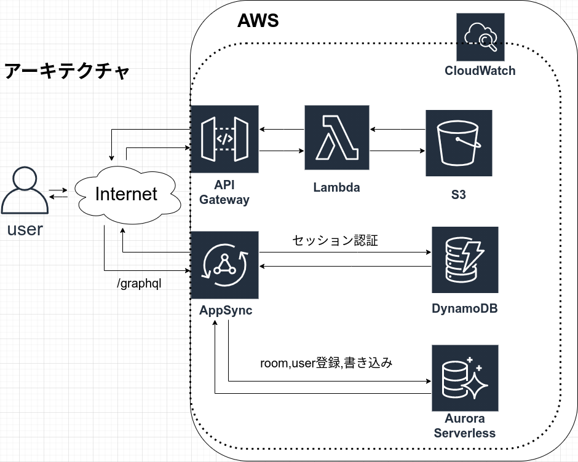

このアプリについて
アーキテクチャ

About me
プロフィール
2000年8/12生
早稲田大学基幹理工学部表現工学科３年
尾形研究室(AI&Robotics)所属
資格: 基本情報技術者、SAJスキー検定1級
経歴
2020/1 ~ 2021/1 Crystal-Method Co.,Ltd. Engineer intern(1 year)
リンク集
gmail: itodaisuke0812@gmail.com
github: https://github.com/shishamoid
linkedin: https://www.linkedin.com/in/daisuke-ito-31713a1bb